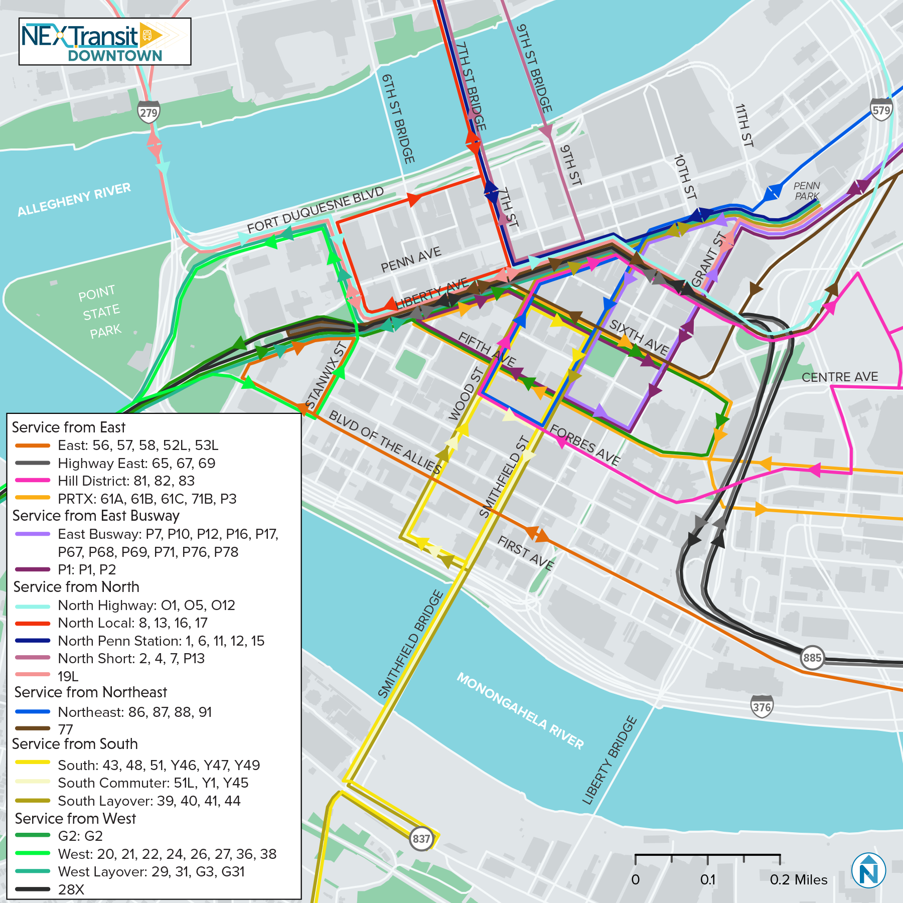
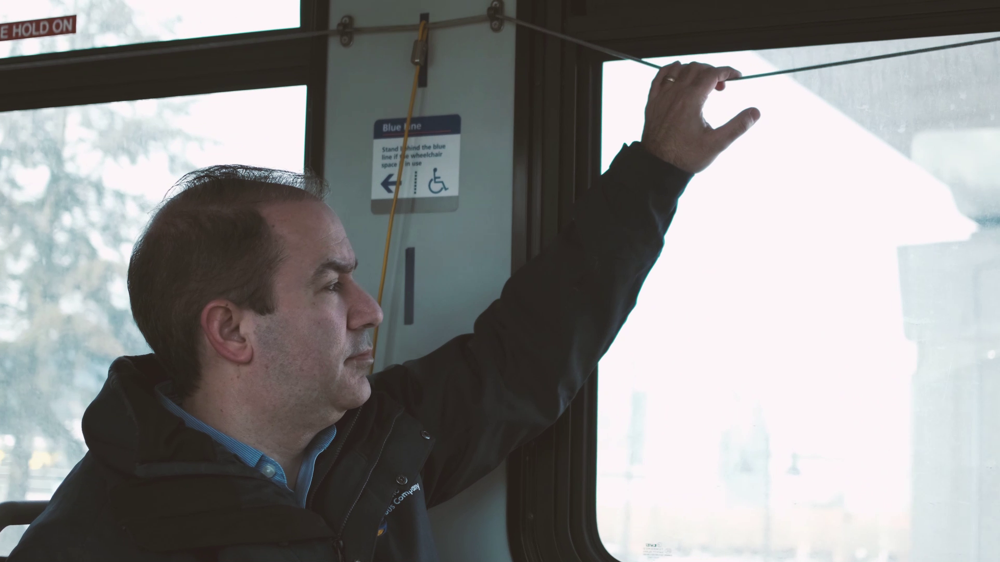
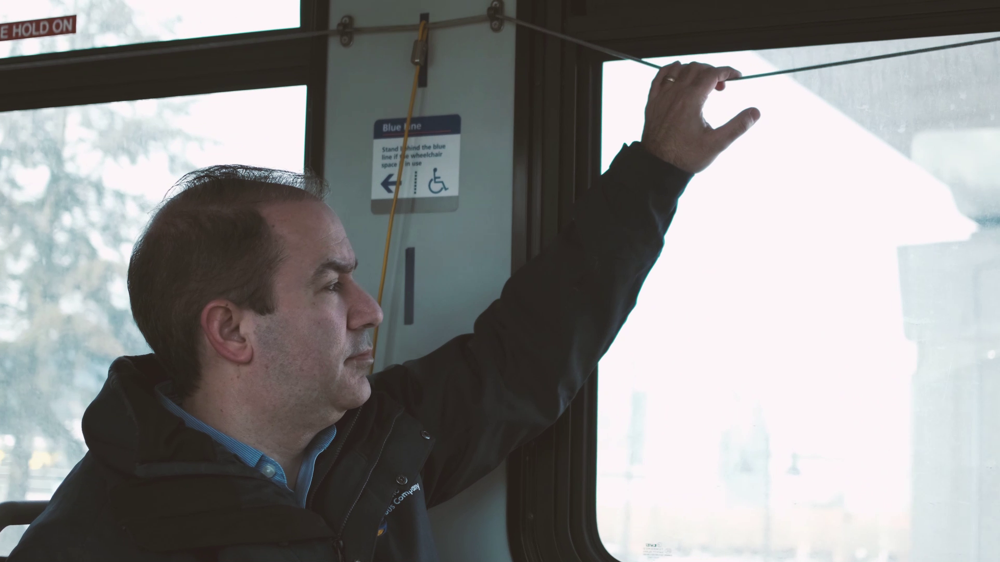

Introduction to the Pittsburgh Regional Transit (PRT)
The Pittsburgh Regional Transit system has 98 different bus routes that can be taken throughout the city and Allegheny County. Students at University of Pittsburgh get free access to all PRT buses with their Panther Card. As students living on campus, some bus routes are more important than others. In this section of the training manual, we'll go through how to plan your trip using apps like Google Maps or Transit, the top destinations and their corresponding buses, and some tips and tricks when using the PRT bus system.
All the PRT bus routes
Apps that aid in using the buses!
The first step for any excursion involving the bus is planning and figuring out where you’re going! Once you’ve decided on a destination, you can either look up routes and times using PRT’s website, or you can utilize apps that help with routing in real time. The best two apps to use for Pittsburgh’s bus system are Google Maps and Transit. Google Maps often has updated bus routes due to construction or city events, but Transit has more reliable real-time tracking of buses so both have negatives and positives. Using a combination of the two, you can get anywhere easily and quickly!
How to use the transit app!
How to get on and off the bus...
1a: Once you've navigated to your bus stop, keep an eye out for your bus. When you see your bus approaching, be sure to wave at the bus driver to stop. Buses won’t stop at every stop on their route unless they’re dropping people off there or someone is getting on. Make it clear to bus drivers that you intend to get on their bus so you don’t get left at the bus stop!
1b: Make sure you are on the right side of your bus stop. Buses can come from both ways and when it's a one way road like on Fifth Ave, knowing which way your bus is coming can be tricky. It never hurts to double check!
2: Have your Panther Card ready when you get on the bus, and tap it on the orange rectangle next to the bus driver! This is the scanner that takes your fare, as stated before, you get unlimited free fares as a Pitt student. When the machine chimes, your fare has been accepted. It's as easy as that!
3: Buses fill up quickly so if you want a seat you should grab an empty one quickly. There are also two doors on the bus. The one in the front is usually for entering and the door futher down is for exiting. It is good bus etiquette to follow this standard to make bus riding smoother for everyone but it is not required.
4a: If you want to get off, make sure to pull the yellow wire on the sides of the bus. Doing so indicates to the bus driver that you want to get off at the next stop.
4b: There are two doors on the bus. The one in the front is usually for entering and the door futher down is for exiting. It is good bus etiquette to follow this standard to make bus transportation smoother for everyone but it is not required.
 

Target / Trader Joe's / Giant Eagle / Aldi
To get to any location off of or near Centre Ave, it’s best to take the 71A or 71C. These all take slightly different routes, but they each have stops near Target. Get on one of these buses heading outbound on Fifth Ave and get off close to your location. For Target and Trader Joe’s, get off at any stop on Penn Avenue. For Giant Eagle or Aldi, get off at Centre Ave/Negley. For Giant Eagle or Aldi, get off at Centre Ave/Negley, and on your way home, simply take the 71A or C inbound to return to campus.
Pittsburgh Zoo & Aquarium
There’s a few options for getting to Pittsburgh’s Zoo and Aquarium, but here are the best that don’t require transfers:

Acrisure Stadium
If you want to go to Acrisure on the North Shore without taking the T, you will have to walk across the bridges from Downtown over to the stadium complex, so be prepared! Taking the bus on game day can be crowded and take longer due to traffic, be sure to leave with plenty of time to spare. Leaving from Fifth Avenue, the best stops to use are Fifth & Tennyson, Fifth & Thackeray, and Fifth & Atwood. Make sure you’re on the Inbound side of Fifth (Soldiers & Sailors side) From here you can take a number of lines to get downtown - some will take longer than others though, always be prepared with backup plans and leave extra time! From these stops you can take any of the following buses:
Kennywood
On a nice day in early Fall semester or late Spring semester, you and your friends may want to visit Kennywood Park! Getting to Kennywood is very simple! Just catch the 61C from any stop on Forbes Avenue going outbound. The ride is about 35 minutes, but the bus has a stop right at Kennywood, making it very easy to navigate to. Just make sure to check when buses stop running and to leave the park with plenty of time to get back to campus. When returning to campus after your day at the park, the quickest way home is to take the 61C inbound. Otherwise, you can take the 59 to the Waterfront, and transfer onto the 61D at any of the bus stops in the complex.

PPG Paints Arena
The quickest and easiest way to get to PPG is using the 81 or 83 bus. You can catch these on either Forbes or Fifth. Both have stops right outside the PPG Paints Arena, however the 83 will take longer as it has an extended route that first goes outbound before returning to Downtown. Because of the 81 and 83’s routing, they pass through Oakland on both their inbound and outbound trips, so they’ll be your best option for making it home after a hockey game or concert!